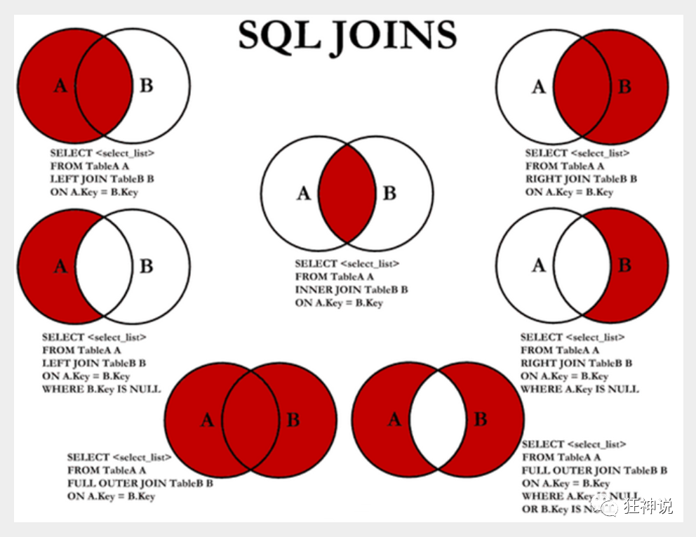

Ambow
Day-01
Java特性
面向对象（万物皆对象）：
封装：将客观事物抽象成类，每个类可以把自身数据和方法只让可信的类或对象操作，对不可信的进行信息隐藏。
继承：对象的一个新类可以从现有的类中派生，派生类可以从它的基类那继承方法和实例变量，且派生类可以修改或新增新的方法使之更适合特殊的需求。
多态：允许不同类的对象对同一消息作出响应。不同对象调用相同方法即使参数也相同，最终表现行为是不一样的。
JDBC
JDBC工具类
1
2
3
4
5
6
7
8
9
10
11
12
13
14
15
16
17
18
19
20
21
22
23
24
25
26
27
28
29
30
31
32
33
34
35
36
37
38
39
40
41
42
43
44
45
46
47
48
49
50
51
52
53
54
55
56
57
58
59
60
61
62
63
64
65
66
67
68
69
70
71
72
73
74
75
| package com.ambow.utils;
import com.mysql.cj.jdbc.Driver;
import java.sql.*;
public class JDBCUtils {
public static Connection getConnection(){
Connection connection = null ;
Statement statement = null;
try {
String url = "jdbc:/mysql///demo";
String username = "root";
String password = "root";
String driver = "com.mysql.cj.jdbc.Driver";
try {
Class.forName(driver);
} catch (ClassNotFoundException e) {
throw new RuntimeException(e);
}
return DriverManager.getConnection(url,username,password);
} catch (SQLException sqlException) {
throw new RuntimeException(sqlException);
}
}
public static void close(Statement statement, Connection connection){
try {
statement.close();
} catch (SQLException e) {
throw new RuntimeException(e);
}
try {
connection.close();
} catch (SQLException e) {
throw new RuntimeException(e);
}
}
public static void close(Statement statement, Connection connection, ResultSet resultSet){
try {
statement.close();
} catch (SQLException e) {
throw new RuntimeException(e);
}
try {
connection.close();
} catch (SQLException e) {
throw new RuntimeException(e);
}
try {
resultSet.close();
} catch (SQLException e) {
throw new RuntimeException(e);
}
}
}
|
作业
用递归的方式获取该路径下的所有目录
1
2
3
4
5
6
7
8
9
10
11
12
13
14
15
16
17
18
19
20
| public class Main {
public static void main(String[] args) {
directory("D:/Java/jdk1.8");
}
public static void directory(String path) {
File file = new File(path);
if ( ! file.isDirectory() ) {
return;
}
for (String s : Objects.requireNonNull(file.list())) {
System.out.println(path + "/" + s);
}
for ( String dir : Objects.requireNonNull(file.list()) ){
directory(path + "/" + dir);
}
}
}
|
Day-02
Java基础语法
一、变量
- byte: 占用 1 个字节，取值范围-128 ~ 127
- short: 占用 2 个字节，取值范围-2^15^ ~ 2^15^-1
- int：占用 4 个字节，取值范围-2^31^ ~ 2^31^-1
- long：占用 8 个字节
- float：占用 4 个字节
- double：占用 8 个字节
- char: 占用 2 个字节
- boolean：占用大小根据实现虚拟机不同有所差异
二、运算
1.算术运算符
| 操作符 |
描述 |
例子（A=10,B=20） |
| + |
加法 - 相加运算符两侧的值 |
A + B == 30 |
| - |
减法 - 左操作数减去右操作数 |
A – B== -10 |
| * |
乘法 - 相乘操作符两侧的值 |
A * B == 200 |
| / |
除法 - 左操作数除以右操作数 |
B / A == 2 |
| ％ |
取余 - 左操作数除以右操作数的余数 |
B % A == 0 |
| ++ |
自增: 操作数的值增加1 |
B ++（先使用后自增） 或 ++ B （先自增后使用） |
| - - |
自减: 操作数的值减少1 |
B - -（先使用后自减）或 - - B （先自减后使用） |
2.关系运算符
| 运算符 |
描述 |
例子（A=10,B=20） |
| == |
检查如果两个操作数的值是否相等，如果相等则条件为真。 |
(A == B) == false |
| != |
检查如果两个操作数的值是否相等，如果值不相等则条件为真。 |
(A != B) == true |
| > |
检查左操作数的值是否大于右操作数的值，如果是那么条件为真。 |
(A > B) == false |
| < |
检查左操作数的值是否小于右操作数的值，如果是那么条件为真。 |
(A < B) == true |
| >= |
检查左操作数的值是否大于或等于右操作数的值，如果是那么条件为真。 |
(A >= B) == false |
| <= |
检查左操作数的值是否小于或等于右操作数的值，如果是那么条件为真。 |
(A <= B) == true |
3.逻辑运算符
| 操作符 |
描述 |
例子（A=true,b=false) |
| && |
称为逻辑与运算符。当且仅当两个操作数都为真，条件才为真。 |
(A && B) == flase |
| || |
称为逻辑或操作符。如果任何两个操作数任何一个为真，条件为真。 |
( A || B) == true |
| ! |
称为逻辑非运算符。用来反转操作数的逻辑状态。如果条件为true，则逻辑非运算符将得到false。 |
! ( A && B) == true |
4.赋值运算符
| 操作符 |
描述 |
例子 |
| = |
简单的赋值运算符，将右操作数的值赋给左侧操作数 |
C = A + B将把A + B得到的值赋给C |
| += |
加和赋值操作符，它把左操作数和右操作数相加赋值给左操作数 |
C += A等价于C = C + A |
| -= |
减和赋值操作符，它把左操作数和右操作数相减赋值给左操作数 |
C -= A等价于C = C - A |
| *= |
乘和赋值操作符，它把左操作数和右操作数相乘赋值给左操作数 |
C *= A等价于C = C * A |
| /= |
除和赋值操作符，它把左操作数和右操作数相除赋值给左操作数 |
C /= A，C 与 A 同类型时等价于 C = C / A |
| （％）= |
取模和赋值操作符，它把左操作数和右操作数取模后赋值给左操作数 |
C ％= A等价于C = C ％ A |
| <<= |
左移位赋值运算符 |
C <<= 2等价于C = C << 2 |
| >>= |
右移位赋值运算符 |
C >>= 2等价于C = C >> 2 |
| ＆= |
按位与赋值运算符 |
C ＆= 2等价于C = C＆2 |
| ^= |
按位异或赋值操作符 |
C ^= 2等价于C = C ^ 2 |
| |= |
按位或赋值操作符 |
C |= 2等价于C = C | 2 |
三、循环
1.while循环
2.for循环
1
2
3
| for(初始化; 布尔表达式; 更新) {
}
|
四、数组
1
2
3
| int[] array = new int[100];
int numbers[] = new int[100];
String[] week = new String[]{"周一","周二","周三","周四","周五","周六","周日"};
|
五、数组
冒泡排序
1
2
3
4
5
6
7
8
9
10
11
12
13
14
15
16
17
18
19
20
21
22
| public static int[] bubbleSort(int[] array) {
int length = array.length;
int temp;
for (int i = 0; i < length - 1; i++) {
for (int j = 0; j < length - i - 1; j++) {
if (array[j] > array[j + 1]) {
temp = array[j + 1];
array[j + 1] = array[j];
array[j] = temp;
}
}
}
return array;
}
public static void main(String[] args) {
public int[] array = new int[]{3, 44, 38, 5, 47, 15, 36, 26, 27, 2, 46, 4, 19, 50, 48};
System.out.println(Arrays.toString(bubbleSort(array)));
}
|

选择排序
1
2
3
4
5
6
7
8
9
10
11
12
13
14
15
16
17
18
19
20
21
22
23
24
| public static int[] selectionSort(int[] array) {
int length = array.length;
int minIndex, temp;
for (int i = 0; i < length - 1; i++) {
minIndex = i;
for (int j = i + 1; j < length - 1; j++) {
if (array[j] < array[minIndex]) {
minIndex = j;
}
}
temp = array[i];
array[i] = array[minIndex];
array[minIndex] = temp;
}
return array;
}
public static void main(String[] args) {
public int[] array = new int[]{3, 44, 38, 5, 47, 15, 36, 26, 27, 2, 46, 4, 19, 50, 48};
System.out.println(Arrays.toString(selectionSort(array)));
}
|

快速排序
1
2
3
4
5
6
7
8
9
10
11
12
13
14
15
16
17
18
19
20
21
22
23
24
25
26
27
28
29
30
31
32
33
34
35
| blic static int[] quickSort(int[] array, int left, int right) {
if (left < right) {
int partitionIndex = partition(array, left, right);
quickSort(array, left, partitionIndex - 1);
quickSort(array, partitionIndex + 1, right);
}
return array;
}
public static int partition(int[] array, int left, int right) {
int pivot = left;
int index = pivot + 1;
for (int i = index; i < right; i++) {
if (array[i] < array[pivot]) {
swap(array, i, index);
index++;
}
}
swap(array, pivot, index - 1);
return index - 1;
}
public static void swap(int[] array, int a, int b) {
int temp = array[a];
array[a] = array[b];
array[b] = temp;
}
public static void main(String[] args) {
public int[] array = new int[]{3, 44, 38, 5, 47, 15, 36, 26, 27, 2, 46, 4, 19, 50, 48};
System.out.println(Arrays.toString(quickSort(array，0，array.length)));
}
|

斐波那契数列
1
2
3
4
5
6
7
8
9
10
11
12
13
14
15
16
17
| BigInteger a = new BigInteger("1");
BigInteger b = new BigInteger("1");
System.out.print("[");
System.out.print(a);
System.out.print("," + b);
for (int i = 0; i < 18; i++) {
if (i % 2 == 0) {
a = a.add(b);
System.out.print("," + a);
} else {
b = b.add(a);
System.out.print("," + b);
}
}
System.out.print("]");
|
六、面向对象
Day-03
List
ArrayList
可调整大小的数组的实现List接口。 实现所有可选列表操作，并允许所有元素，包括null 。 除了实现List 接口之外，该类还提供了一些方法来操纵内部使用的存储列表的数组的大小。 （这个类是大致相当于Vector，不同之处在于它是不同步的）。
LinkedList
双链表实现了List和Deque接口。 实现所有可选列表操作，并允许所有元素（包括null ）。
所有的操作都能像双向列表一样预期。 索引到列表中的操作将从开始或结束遍历列表，以更接近指定的索引为准。
Vector
Vector类实现了可扩展的对象数组。 像数组一样，它包含可以使用整数索引访问的组件。 但是， Vector的大小可以根据需要增长或缩小，以适应在创建Vector之后添加和删除项目。
每个向量尝试通过维护capacity和capacityIncrement优化存储capacityIncrement 。 capacity总是至少与矢量大小一样大; 通常较大，因为当向量中添加组分时，向量的存储空间大小capacityIncrement 。 应用程序可以在插入大量组件之前增加向量的容量; 这减少了增量重新分配的数量。
共同点
不同点
| 集合 |
安全性 |
底层实现 |
效率 |
扩容 |
| ArrayList |
× |
数组 |
增↓↓ 删↓↓ 改↑ ↑查↑↑ |
1.5倍 |
| LinkedList |
× |
双链表 |
增↑↑ 删↑↑ 改↓↓ 查↓↓ |
无需扩容 |
| Vector |
√ |
数组 |
增↓ 删↓ 改↑ 查↑ |
2倍 |
Set
HashSet
此类实现Set接口，由哈希表（实际为HashMap实例）支持。 对集合的迭代次序不作任何保证; 特别是，它不能保证订单在一段时间内保持不变。 这个类允许null元素。
这个类提供了基本操作（add，remove，contains和size）固定的时间性能，假定哈希函数将分散的桶中正确的元素。 迭代此集合需要与HashSet实例的大小（元素数量）和后台HashMap实例（桶数）的“容量”的总和成比例的时间。 因此，如果迭代性能很重要，不要将初始容量设置得太高（或负载因子太低）是非常重要的。
TreeSet
此实现提供了基本的操作（保证的log（n）时间成本add ， remove和contains ）。
需要注意的是由一组（无论是否提供了明确的比较器）保持的顺序必须与equals一致 ，如果它是要正确实现Set接口。 （参见Comparable或Comparator为一致的精确定义与equals）。这是因为该Set接口在来定义equals的操作，但一个TreeSet例如使用其执行所有元件比较compareTo （或compare ）方法，于是两个通过该方法认为相等的元素从集合的角度来看是相等的。 集合的行为是明确定义的，即使其排序与equals不一致; 它只是没有遵守Set界面的总体合同。
共同点
不可重复
不同点
HashSet有序
TreeSet无序
Map
HashMap
基于哈希表的实现的Map接口。 此实现提供了所有可选的地图操作，并允许null的值和null键。 （ HashMap类大致相当于Hashtable ，除了它是不同步的，并允许null）。这个类不能保证地图的顺序; 特别是，它不能保证订单在一段时间内保持不变。
假设哈希函数在这些存储桶之间正确分散元素，这个实现为基本操作（ get和put ）提供了恒定的时间性能。 收集视图的迭代需要与HashMap实例（桶数）加上其大小（键值映射数）的“容量” 成正比 。 因此，如果迭代性能很重要，不要将初始容量设置得太高（或负载因子太低）是非常重要的。
TreeMap
一个红黑树基于NavigableMap实现。 该地图是根据排序natural ordering其密钥，或通过Comparator在地图创建时提供，这取决于所使用的构造方法。
此实现提供了保证的log（n）时间成本containsKey ， get ， put和remove操作。 算法是Cormen，Leiserson和Rivest的算法介绍中的算法的适应性 。
请注意，如果这个排序的映射要正确地实现Map接口，那么由树映射维护的排序（如任何排序的映射）以及是否提供显式比较器都必须与equals Map一致。 （参见Comparable或Comparator为一致的精确定义与equals）。这是因为该Map接口在来定义equals的操作，但一个排序映射使用它所有的键比较compareTo （或compare ）方法，于是两个从排序图的角度来说，通过该方法认为相等的键是相等的。 排序地图的行为是明确定义的，即使其排序与equals ; 它只是没有遵守Map界面的总体合同。
Day-04
MySQL
增删改查
插入
1
| INSERT INTO 表名[(字段1,字段2,字段3,...)] VALUES('值1','值2','值3')
|
删除
1
| DELETE FROM 表名 [WHERE condition];
|
更新
1
| UPDATE 表名 SET column_name=value [,column_name2=value2,...] [WHERE condition];
|
查询
1
2
3
4
5
6
7
8
9
10
| SELECT [ALL | DISTINCT]
{* | table.* | [table.field1[as alias1][,table.field2[as alias2]][,...]]}
FROM table_name [as table_alias]
[left | right | inner join table_name2]
[WHERE ...]
[GROUP BY ...]
[HAVING]
[ORDER BY ...]
[LIMIT {[offset,]row_count | row_countOFFSET offset}];
|
注意 : [ ] 括号代表可选的 , { }括号代表必选得
连接
1
| SELECT * FROM foods, orders WHERE foods.fid = orders.fid
|

内连接
合并具有同一列的两个以上的表的行,结果集中不包含一个表与另一个表不匹配的行
1
| SELECT * FROM foods INNER JOIN orders ON foods.fid = orders.id
|
左连接
结果集包含左边表全部数据与右边表中的关联数据
1
| SELECT * FROM foods inner JOIN orders ON foods.fid = orders.id
|
右连接
1
| SELECT * FROM foods inner JOIN orders ON foods.fid = orders.id
|
结果集包含左边表全部数据与右边表中的关联数据
合并查询
合并查询结果（UNION）
1
2
3
4
5
| SELECT * FROM 表1 [WHERE ...]
UNION
SELECT * FROM 表2 [WHERE ...]
UNION
......
|
分组查询
分组（GROUP BY）
查询平均价格 > 5的食物类型
1
| SELECT AVG(fprice), ftype FROM foods GROUP BY ftype HAVING AVG(fprice) > 5
|
练习题
1
2
3
4
5
6
7
8
9
10
11
12
13
14
15
16
17
18
19
20
21
22
23
24
25
26
27
28
29
30
31
32
33
34
35
|
SELECT * FROM student ;
SELECT * FROM student LIMIT 2,2;
SELECT id, name, department FROM student;
SELECT * FROM student WHERE department IN('计算机系','英语系');
SELECT * FROM student WHERE department = '计算机系' OR department = '英语系';
SELECT department AS '院系', count(department) AS '院系人数' FROM student GROUP BY department;
SELECT c_name AS '科目', MAX(grade) AS '最高分' FROM score GROUP BY c_name;
SELECT c_name AS '考试科目', grade AS '考试成绩' FROM score WHERE stu_id = (SELECT id FROM student WHERE name = '李四');
SELECT * FROM student INNER JOIN score ON student.id = score.stu_id;
SELECT student.name AS '学生姓名', SUM(score.grade) AS '总成绩' FROM student INNER JOIN score ON student.id = score.stu_id ;
SELECT c_name AS '考试科目', AVG(grade) AS '平均成绩' FROM score GROUP BY c_name;
SELECT student.*, score.grade AS '计算机科目成绩' FROM student INNER JOIN score ON student.id = score.stu_id WHERE score.c_name = '计算机' AND score.grade < 95;
SELECT * FROM student WHERE id IN ( SELECT stu_id FROM score WHERE c_name = '计算机' ) AND id IN ( SELECT stu_id FROM score WHERE c_name = '英语' ) ;
SELECT * FROM score WHERE c_name ='计算机' ORDER BY grade DESC;
SELECT id FROM student
UNION
SELECt stu_id FROM score;
SELECT student.name, student.department, score.c_name, score.grade FROM student INNER JOIN score ON student.id = score.stu_id WHERE student.name LIKE '张%' OR student.name LIKE '王%';
SELECT student.name, 2023 - student.birth, student.department, score.c_name, score.grade FROM student INNER JOIN score ON student.id = score.stu_id WHERE student.address LIKE '湖南省%' ;
|